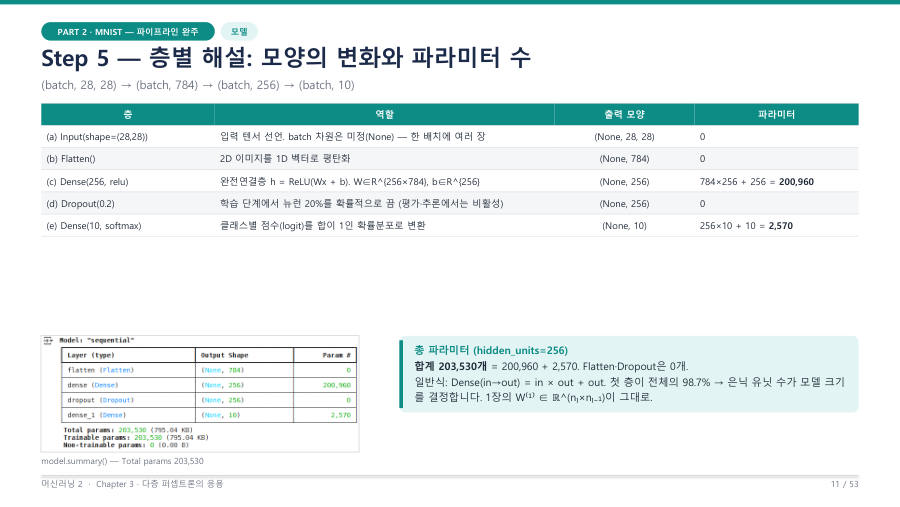

model.summary()와 파라미터 수 세기 ★★★
파라미터는 학습으로 고쳐지는 숫자(가중치 W와 편향 b)의 총 개수예요. 정수 계산이라 시험에 반드시 나온다고 교수님이 말했어요(784×256 정도는 손으로 하면 되고 계산기는 못 써요).
Dense(입력 → 출력)의 파라미터 = 입력 × 출력 + 출력. 앞의 곱이 가중치, 뒤의 "+ 출력"이 편향(뉴런마다 하나)이에요. Input · Flatten · Dropout은 0개예요.
왜 "+ 출력"일까요? 편향은 뉴런마다 하나씩 있어요. 은닉층 뉴런이 256개면 편향도 256개예요. 이 편향을 빼먹는 것이 가장 흔한 실수예요.
| 층 | 계산 | 파라미터 |
|---|---|---|
| Flatten | 모양만 바꿈 | 0 |
| Dense(256, 'relu'), 입력 784 | 784 × 256 + 256 = 200,704 + 256 | 200,960 |
| Dropout(0.2) | 끄기만 함 | 0 |
| Dense(10, 'softmax'), 입력 256 | 256 × 10 + 10 = 2,560 + 10 | 2,570 |
| 합계 (Total params) | 203,530 | |
784 × 256은 784 × 200 = 156,800과 784 × 56 = 43,904를 더해 200,704로 암산할 수 있어요. 첫 Dense가 전체의 약 98.7%(200,960 / 203,530)를 차지해서, 은닉 유닛 수가 모델 크기를 정한다는 것을 슬라이드가 짚어요.

은닉 유닛 수를 바꿔 보는 문제가 나와요. 입력 784, 출력 10은 그대로예요.
| 은닉 유닛 | 첫 Dense | 출력 Dense | Total params |
|---|---|---|---|
| 128 | 784×128 + 128 = 100,480 | 128×10 + 10 = 1,290 | 101,770 |
| 256 | 784×256 + 256 = 200,960 | 256×10 + 10 = 2,570 | 203,530 |
| 512 | 784×512 + 512 = 401,920 | 512×10 + 10 = 5,130 | 407,050 |
유닛을 4배(128 → 512) 늘리면 파라미터도 약 4배(101,770 → 407,050)가 되는데, 슬라이드 실험에서 테스트 정확도는 0.9752에서 0.9794로 0.4%p밖에 안 올랐어요. 크게 키워도 이득이 점점 줄어드는 수확 체감이에요.
층이 더 많은 경우도 같은 규칙이에요. 입력 784 → 128 → 64 → 10이면 (784×128+128) + (128×64+64) + (64×10+10) = 100,480 + 8,256 + 650 = 109,386이에요. 입력 20 → 8 → 3이면 (20×8+8) + (8×3+3) = 168 + 27 = 195예요.
Dense 층의 파라미터 수는 (입력 뉴런 수 × 출력 뉴런 수) + 출력 뉴런 수(편향)이다. 784 → 256 → 10 구조는 (784×256+256) + (256×10+10) = 200,960 + 2,570 = 203,530개이며, Flatten과 Dropout은 학습할 파라미터가 없어 0개이다.
잠깐 확인 — 입력 784, 은닉 Dense(100), 출력 Dense(10)일 때 Total params는?
(784×100+100) + (100×10+10) = 78,500 + 1,010 = 79,510개예요.
화면을 가리고 "model.summary()와 파라미터 수 세기 ★★★"을(를) 친구에게 설명하듯 한 문장으로 말해 보세요. 막히면 위의 빨간 칸만 다시 보고 넘어가요.
자료: 6주차 · 머신러닝2_chapter3_redesign.pdf(p.1–17) · 머신러닝06.txt, 머신러닝07.txt(10/19 중간고사 복습)